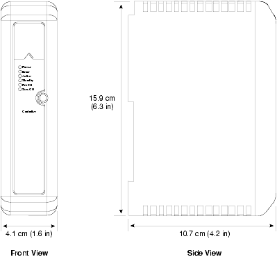
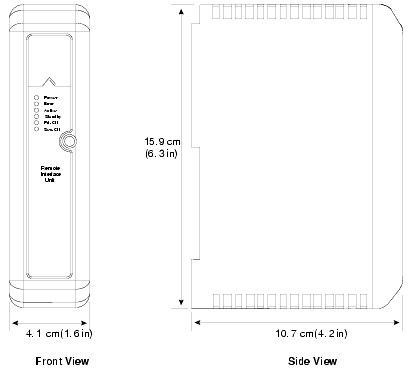
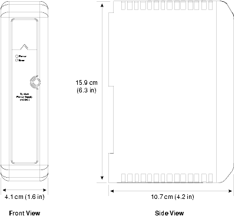
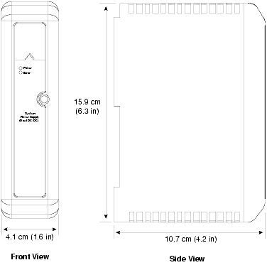
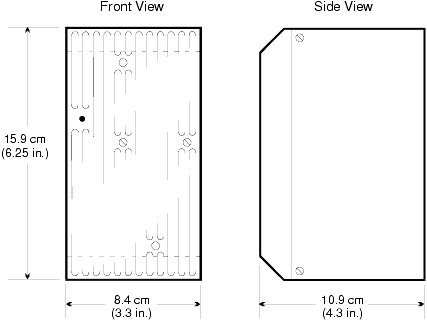

Source: DeltaV M-series Hardware Installation and Reference Manual, Emerson D800001X312, April 2021 — Appendices D, E





This lesson consolidates the specifications for the DeltaV controllers (MD Plus, MX, MQ), the Remote Interface Unit, the Fiber-Optic Media Converter, and the three types of system power supplies.
Appendix D, Page 315
| Item | Specification |
|---|---|
| Supported models | MD Plus, MX, MQ |
| Power requirement | +5 VDC at 1.4 A maximum (supplied by system power supply through 2-wide power/controller carrier) |
| Fuse protection | 3.0 A, non-replaceable fuses |
| Power dissipation | 5.0 W typical; 7.0 W maximum |
| Mounting | Right slot of power/controller carrier |
Appendix D, Pages 316–317
The Remote Interface Unit allows standard DeltaV I/O cards to be installed remotely from the controller. The remote subsystem (RIU + system power supply + carriers + I/O cards) can be located in Zone 2 and communicates with the controller over redundant Control Network (Ethernet) connections.
| Item | Specification |
|---|---|
| Power requirement | +3.3 VDC at 500 mA max + +5 VDC at 200 mA max (from system power supply via 2-wide carrier) |
| Fuse protection | 3.0 A, non-replaceable fuses |
| Power dissipation | 3.0 W maximum |
| Mounting | Right slot of power/controller carrier |
| Port | Connects To | Speed |
|---|---|---|
| Primary | Primary Control Network switch or hub | 10/100 Mbit Ethernet |
| Secondary | Secondary Control Network switch or hub | 10 Mbit Ethernet |
Appendix D, Pages 317–318
Converts 10BaseT TP (twisted-pair) to 10Base-FL ST fiber cable, extending the Ethernet link range to 2,000 meters. Used with controllers to provide long-distance Control Network connectivity.
| Item | Specification |
|---|---|
| LAN interface | Ethernet IEEE 802.3 compatible |
| Port interface | 10BaseT RJ45 compatible |
| Data rate | 10 Mbps |
| Fiber interface | 10Base-FL compatible |
| Fiber type | Multimode 62.5/125 µm |
| LocalBus current (12 VDC nominal) | 250 mA typical; 300 mA maximum |
Appendix E, Pages 319–321
| Item | Specification |
|---|---|
| Input | 100–264 VAC, 47–63 Hz, single-phase |
| Inrush (soft start) | 230 VAC input at 35 A peak maximum for one cycle or less |
| Output power | 25 W total at 60 °C |
| Output voltages (25 W max) | +12 VDC at 2.1 A max; +5 VDC at 2.0 A max; +3.3 VDC at 0.5 A max |
| Combined 5 VDC + 3.3 VDC | 10 W maximum |
| Input protection | Internally fused, non-replaceable fuses |
| Overvoltage protection | Output protected at 110% to 120% |
| Hold-up time | Output within 5% of nominal at full load and 115 VAC input for 20 ms |
| Mounting | Either slot of 2-wide power/controller carrier |
| Connector | Function |
|---|---|
| Primary power | AC input, 3-wire |
| Alarm contacts | 2-wire normally open relays; closed when outputs within ±4% of nominal; rated 30 VDC at 2.0 A / 250 VAC at 2.0 A |
Appendix E, Pages 321–323
| Item | KJ1501X1-BC1 | KJ1501X1-BC2 | KJ1501X1-BC3 |
|---|---|---|---|
| Input | 12 VDC ±5% at 14.8 A 24 VDC ±5% at 4.0 A |
12 VDC ±5% at 14.8 A 24 VDC (-15% to +20%) at 4.0 A |
12 VDC (-4/+5%) at 14.8 A 24 VDC ±20% at 6.1 A |
| Output (−20 to 60 °C) | +12 VDC at 13.0 A (12 VDC input) +12 VDC at 4.5 A (24 VDC input) +5.1 VDC at 2.0 A +3.4 VDC at 2.0 A (10.2 W total from 5.1 + 3.4 VDC) |
N/A | N/A |
| Output (−40 to 60 °C) | N/A | +12 VDC at 13.0 A (12 VDC input) +12 VDC at 4.5 A (24 VDC input) +5.1 VDC at 2.0 A +3.4 VDC at 2.0 A (10.2 W total) |
+12 VDC at 13.0 A (12 VDC input) +12 VDC at 8.0 A (24 VDC input) +5.1 VDC at 2.0 A +3.4 VDC at 2.0 A (10.2 W total) |
| Output (60 to 70 °C) | N/A | +12 VDC at 10.0 A (12 VDC input) +12 VDC at 3.0 A (24 VDC input) +5.1 VDC at 2.0 A +3.4 VDC at 2.0 A |
+12 VDC at 10.0 A (12 VDC input) +12 VDC at 6.0 A (24 VDC input) +5.1 VDC at 2.0 A +3.4 VDC at 2.0 A |
| Item | Specification |
|---|---|
| Inrush (soft start) | 12 A peak max for 5 ms over 12 VDC input range (excl. 12 VDC output); 20 A peak max for 5 ms over 24 VDC input range (incl. 12 VDC outputs) |
| Input protection | Internally fused, non-replaceable fuses |
| Overvoltage protection | Output protected at 110% to 120% |
| Hold-up time | Output within 5% of nominal at full load and minimum input voltage for 5 ms (excl. 12 VDC current with 12 VDC input) |
| Mounting | Either slot of 2-wide power/controller carrier |
| Connector | Function |
|---|---|
| Primary power | DC input, 2-wire |
| Alarm contacts | 2-wire normally open relays; closed when 3.3 and 5 VDC outputs within ±4% of nominal; rated 30 VDC at 2.0 A / 250 VAC at 2.0 A |
Appendix E, Page 324
| Item | Specification |
|---|---|
| Input | 18.5–36 VDC (24 VDC nominal) |
| Output | 12 VDC ±5% |
| Output current | 5 A |
| Input-to-output isolation | 250 VAC rms |
| Hold-up time | 1.8 ms |
| Input protection | Internally fused, non-replaceable fuses |
| Overvoltage protection | 110% to 120% |
| Input power | 80 Watts |
| Mounting | I.S. Power Supply Carrier |
| External connectors | DC input, 2-part screw terminal |
| Feature | AC/DC | Dual DC/DC | I.S. DC/DC |
|---|---|---|---|
| Input type | 100–264 VAC | 12 VDC and/or 24 VDC | 18.5–36 VDC |
| Output power | 25 W at 60 °C | Up to 196 W (12 VDC × 13 A + 10.2 W) | 60 W (12 VDC × 5 A) |
| Output voltages | +12, +5, +3.3 VDC | +12, +5.1, +3.4 VDC | +12 VDC only |
| Hold-up time | 20 ms | 5 ms | 1.8 ms |
| Mounting | 2-wide carrier (either slot) | 2-wide carrier (either slot) | I.S. Power Supply Carrier |
| Hazardous area | No | No | Yes (Zone 1) |
| Alarm relays | Yes (NO, 2-wire) | Yes (NO, 2-wire) | No |
Q1: What is the maximum power dissipation of the MD Plus / MX / MQ controllers?
A1: 7.0 W maximum (5.0 W typical).
Q2: What is the difference in Ethernet speed between the primary and secondary ports of the Remote Interface Unit?
A2: Primary supports 10/100 Mbit; secondary is limited to 10 Mbit.
Q3: What fiber type does the fiber-optic media converter use, and what is its maximum link range?
A3: Multimode 62.5/125 µm fiber, with a maximum range of 2,000 meters.
Q4: Which power supply has the longest hold-up time, and what is it?
A4: The AC/DC power supply, with a 20 ms hold-up time at full load and 115 VAC input.
Q5: Why must fiber-optic patch cables be connected Tx-to-Rx rather than Tx-to-Tx?
A5: The fiber-optic media converter uses separate transmit and receive paths. Connecting Tx-to-Rx ensures the transmit signal from one end reaches the receive input at the other end. Connecting Tx-to-Tx would result in no signal reception.
Reference: DeltaV M-series Hardware Installation and Reference Manual, Emerson D800001X312, April 2021 — Appendices D, E (pages 315–326)